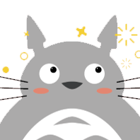

艇仔粥 TingZaiZuk
Preface
Home
丨
Tech Talk
Tap Water
mini Ted Talk
About
艇仔粥 TingZaiZuk
Home
丨
Tech Talk
Tech Talk
Mkdocs網站搭建
Mkdocs網站搭建
Mkdocs快速概覽 & 簡介
1.1 用Markdown寫文章
1.2 HTML in Mkdocs
1.3 Mkdocs混合頁面
1.4 導航欄設置心得
2.1 Python與Mkdocs安裝
Mkdocs漢語字體
爬行動物
爬行動物
爬取steam游戲榜單
爬取校招網招聘信息
爬取豆瓣帖子
爬取Covid個案數據
表面功夫
表面功夫
開發心得
循環裏匹配不同樣式
組件間的數據傳輸
编辑功能的实现
突發奇想
突發奇想
語音助手與天氣
Tap Water
Tap Water
Preface
Preface
Preface
Chapter I
Chapter I
再來七杯自來水
Celeste
魚腸
袁鳳嵐
Chapter IV
Chapter IV
和歌山之旅
奧克蘭的初夏
Wu Kai Sha
巷
成都的四日三夜
Chapter V
Chapter V
詩生活
翻頁
Chapter VI
Chapter VI
音符
宇宙飛船
明天
Untitled
豉油的初衷
Chapter VII
Chapter VII
緊急想念
不可抗力
mini Ted Talk
mini Ted Talk
關於選擇
向流星許願
狩月人
緊急維修
電子湯圓
2021之總結
About
Preface
『再來七杯自來水』
引用自自己第一次嘗試寫短詩的取名。未出版，現“斷續”上載于艇仔粥。
Tip
可以使用頁尾"下一頁"按鈕按章節順序瀏覽
回到页面顶部